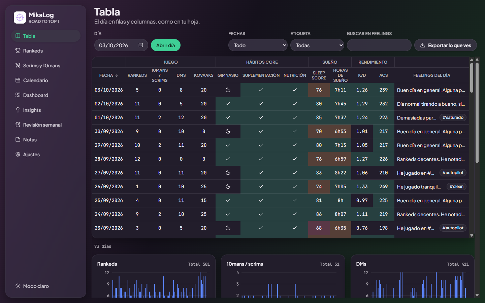

Riot account sync: user flow
Mockup of how a player links their own Riot account in MikaLog and
fills in their day from their own match history. Example data only.
The rest of the app already exists and is released; the screenshot
below is the current daily table, filled in by hand.
Maqueta de cómo un jugador conecta su propia cuenta de Riot y
rellena su día con su historial. Datos de ejemplo.

Sync is off until the player opts in from Settings. The card explains what is read and shows Riot's required notice before any sign-in.
Settings › Riot account
Link your Riot account to fill in your own ranked games, K/D, ACS, agents and maps. MikaLog only reads your own match history, only when you press Sync, and keeps it on this computer.
Linking your account makes your player data public, as required by Riot Games. MikaLog does not show your data to anyone else.
Connect with Riot Privacy policy
The app opens the player's browser on
mikalog-sync.miguelangeldiaztic.workers.dev/rso/login,
which redirects to Riot's official sign-in page (scopes
openid offline_access). MikaLog never sees the password.
After consent, Riot returns to /rso/callback; the server
exchanges the code, reads /riot/account/v1/accounts/me
and hands the result back to the app once.
Browser
Riot Games sign-in page (official, hosted by Riot)
→ "You can go back to MikaLog now."
Settings › Riot account
Linked as Player#EUW · region EU
DisconnectDisconnect deletes the token from this computer. Access can also be revoked from the Riot account settings.
On a day's page the player presses Sync. The server reads the player's
own matchlist (VAL-MATCH-V1), the competitive matches of
that date, and agent and map names (VAL-CONTENT-V1), and
returns only the player's own line of each match.
Thursday 08/10/2026 · Sync
| Map | Agent | Result | K | D | ACS |
|---|---|---|---|---|---|
| Ascent | Jett | Win 13–9 | 22 | 16 | 261 |
| Lotus | Jett | Loss 10–13 | 17 | 18 | 214 |
| Haven | Raze | Win 13–7 | 19 | 13 | 248 |
| Ascent | Jett | Loss 11–13 | 16 | 17 | 201 |
The day's row gets the totals, computed like the game does (total kills over total deaths, total score over total rounds). Everything stays editable, and re-syncing never duplicates matches.
| Date | Ranked | K/D | ACS | Agents | Maps |
|---|---|---|---|---|---|
| 08/10/2026 | 4 | 1.16 | 230 | Jett ×3, Raze ×1 | Ascent ×2, Lotus, Haven |
Not included: other players' stats, scouting, live in-game data, overlays, MMR estimates, ads or payments.